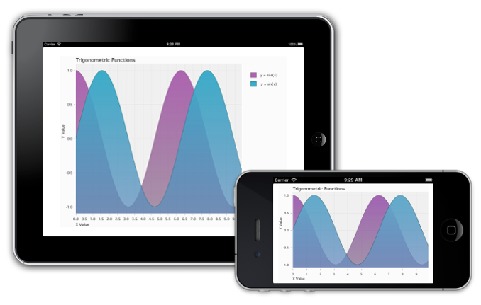
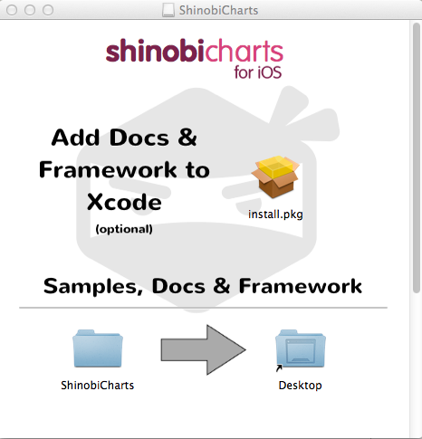
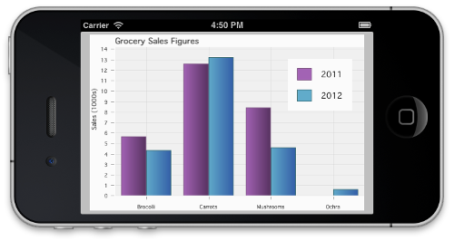
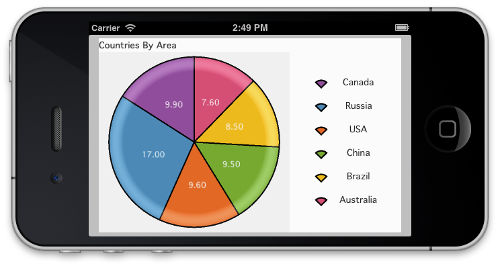
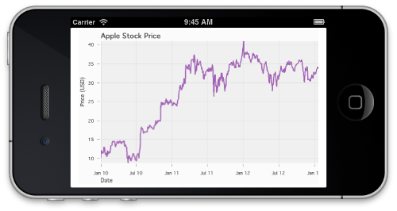
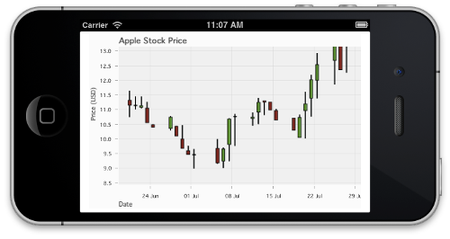
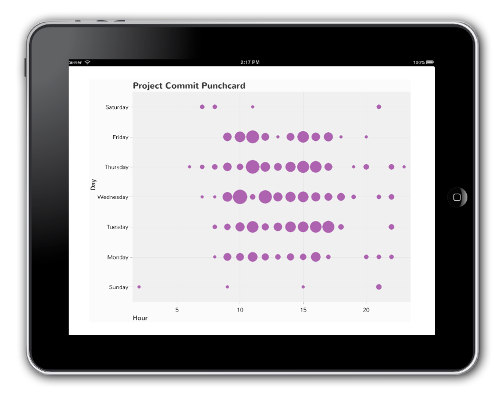
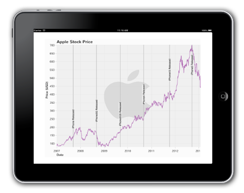
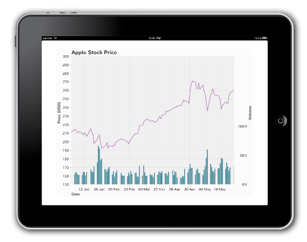

ChartsUserGuide Document
Overview
This document provides an overview of the ShinobiCharts control. It describes the features of the control and its associated concepts.
ShinobiCharts provides a quick and effective way to visually represent data in an iOS application. The chart contains a plot area, upon which a set of chart series (such as line, bar, OHLC, etc.) are displayed. Each series contains a set of data points. A chart can display a number of different types of chart series simultaneously.
The plot area is surrounded by axes which define the dimensions of the data specified. Each axis has a range describing the data being displayed. Furthermore, ShinobiCharts allows the modification of the axis display by providing zoom and pan interaction out of the box.
If you simply want to get up and running, follow the Quick Start Guide, alternatively, for a more detailed description of how the chart works and the features it presents, head over to the ShinobiChart Control Overview. Finally, for guides that tackle specific usage scenarios, head on over to the ShinobiChart How-to Guides.
The chart has a complete set of Xamarin.iOS bindings, allowing you to make use of all of its features from within applications written in C#. In order to get up and running, follow the Quick Start Guide for Xamarin iOS.
Quick Start Guide
Introduction
This is a brief introduction to using the ShinobiCharts component. This quick start guide will walk you through a series of simple steps introducing the key features of the charting library which includes supplying data to the chart via the datasource, simple styling and configuration of the labels, title and axes.
At the end of this guide you will have created the following chart:

Installation
ShinobiCharts now ships with an installer, to make it easier to get started. To run the installer open the ‘ShinobiCharts.dmg’ file which you downloaded from ShinobiControls and run ‘install.pkg’. When it opens up, it should look as below.

The easiest way to install the ShinobiCharts framework is to run the ‘install.pkg’ file. This will install the framework into Xcode for you, along with the framework documentation. This means you can add the framework to your project in the same way as you would any of the frameworks which are automatically shipped with Xcode.
If you don’t want to run the installer, the framework is also contained within the ‘ShinobiCharts’ folder in the disk image. Regardless of whether you ran the installer, you should copy this folder onto your machine. Drag the ‘ShinobiCharts’ folder onto the Desktop icon in the disk image. This will copy the folder onto your desktop.

The ‘ShinobiCharts’ folder contains:
- A copy of the framework.
- A copy of the documentation for the framework.
- A set of samples to demonstrate getting started with ShinobiCharts.
- An uninstall script for uninstalling the ShinobiCharts framework & documentation from Xcode.
- The Xamarin.ios version of the framework (only available with the Premium framework).
- A README file with setup steps.
- A change log stating the changes made in each release.
- A copy of the ShinobiCharts Standard Licence.
- A text file containing the version number of the framework.
Draw a Simple Chart
Start-up Xcode and create a new project via File / New / Single View Application – selecting the option to use Automatic Reference Counting.

Within your newly created project add a reference to the ShinobiCharts framework. If you’ve installed ShinobiCharts using our installer, you can add this in the same way as you would any of the standard Apple frameworks. Select your project target, and switch to the Build Phases tab. Open the Link Binary With Libraries section, click the Plus button, find the entry for ShinobiCharts.framework, and click Add.
If you have just copied the framework onto your machine, the easiest way to add it to your project is to locate the ShinobiCharts.framework and drag it directly into your project.
ShinobiCharts makes use of a few other frameworks, so add the following as well:
- Security.framework (Trial Version only)
- QuartzCore.framework
- OpenGLES.framework
- CoreText.framework
- libstdc++.dylib
The first step is to create an instance of the chart and add it to the view. Open up the ViewController.m file and add the following import statement
#import <ShinobiCharts/ShinobiChart.h>
Further down the same file add an instance variable for the chart:
@implementation ViewController
{
ShinobiChart* _chart;
}
Within the same file add the following to the viewDidLoad method:
self.view.backgroundColor = [UIColor whiteColor];
CGFloat margin = (UI_USER_INTERFACE_IDIOM() == UIUserInterfaceIdiomPhone) ? 10.0 : 50.0;
_chart = [[ShinobiChart alloc] initWithFrame:CGRectInset(self.view.bounds, margin, margin)];
_chart.title = @"Trigonometric Functions";
_chart.licenseKey = @""; // TODO: add your trial licence key here!
This instantiates the chart object, and sets its title. Note that the margin around that chart depends on the device form factor. For the iPad a larger margin is used.
If you have downloaded a trial version of the ShinobiCharts you will have been issued with a trial license key. Add the key that you were supplied with at the location indicated above.
The ShinobiChart object is a UIView subclass, so honors resizing masks and auto-layout. Further down the same method add the following:
chart.autoresizingMask = ~UIViewAutoresizingNone;
This ensures that the chart frame is adjusted when the device orientation changes.
The next step is to add the axes to the chart. In this example both the X and Y axes are linear, although the chart also supports date-time and category axes. Further down the same method add the following:
// add a pair of axes
SChartNumberAxis *xAxis = [[SChartNumberAxis alloc] init];
_chart.xAxis = xAxis;
SChartNumberAxis *yAxis = [[SChartNumberAxis alloc] init];
_chart.yAxis = yAxis;
Now that the chart is configured, the final step is to add it to the view. Add the following to the end of the method:
// Add the chart to the view controller
[self.view addSubview:_chart];
Before you can see the chart in action, you need to supply some data, which brings us onto the next step …
Adding a Datasource
In order to render your data within the chart you need to supply a ‘datasource’, this is a class that adopts the SChartDatasource protocol methods.

Within ViewController.m adopt the datasource protocol via the class extension, that Xcode generated for you, as follows:
@interface ViewController () <SChartDatasource>
The SChartDatasource protocol has four required methods. We’ll take a look at each of them in turn.
The first method numberOfSeriesInSChart: is used to inform the chart how many series you wish to render. Add the following implementation, with a hard-coded value of two:
- (NSInteger)numberOfSeriesInSChart:(ShinobiChart *)chart {
return 2;
}
The next method, sChart:seriesAtIndex: is used to supply each series to the chart. The series objects describe the visual appearance of each series, but not their actual data values. Add the following to the view controller in order to return two different line series:
-(SChartSeries *)sChart:(ShinobiChart *)chart seriesAtIndex:(NSInteger)index {
SChartLineSeries *lineSeries = [[SChartLineSeries alloc] init];
// the first series is a cosine curve, the second is a sine curve
if (index == 0) {
lineSeries.title = [NSString stringWithFormat:@"y = cos(x)"];
} else {
lineSeries.title = [NSString stringWithFormat:@"y = sin(x)"];
}
return lineSeries;
}
The next method, sChart:numberOfDataPointsForSeriesAtIndex:, is used to specify the number of data points within a specific series. Add the following implementation below:
- (NSInteger)sChart:(ShinobiChart *)chart numberOfDataPointsForSeriesAtIndex:(NSInteger)seriesIndex {
return 100;
}
In this example, both series have 100 points, but they do not have to have the same number.
The last required method required by the protocol is sChart:dataPointAtIndex:forSeriesAtIndex:, which the chart uses to request the value of each individual datapoint for each series. The returned datapoint must adopt the SChartData protocol, which specifies xValue and yValue properties. The charting framework supplies a concrete implementation of this protocol, SChartDataPoint, however, you have the option of implementing this protocol with your own data-objects in order to avoid the need to maintain two copies of your data.
Add the following implementation:
- (id<SChartData>)sChart:(ShinobiChart *)chart dataPointAtIndex:(NSInteger)dataIndex forSeriesAtIndex:(NSInteger)seriesIndex {
SChartDataPoint *datapoint = [[SChartDataPoint alloc] init];
// both functions share the same x-values
double xValue = dataIndex / 10.0;
datapoint.xValue = [NSNumber numberWithDouble:xValue];
// compute the y-value for each series
if (seriesIndex == 0) {
datapoint.yValue = [NSNumber numberWithDouble:cosf(xValue)];
} else {
datapoint.yValue = [NSNumber numberWithDouble:sinf(xValue)];
}
return datapoint;
}
Now that the datasource is implemented, you can add the following to viewDidLoad:
_chart.datasource = self;
At this point if you build and run, you should see a couple of series:

With the current implementation each individual datapoint is requested via the datasource. If you have a lot of data, and it is already present in memory, you can optionally make use of the sChart:dataPointsForSeriesAtIndex: protocol method. Your implementation of this method should return all the points for a given series, and this method will be used instead of sChart:dataPointAtIndex:forSeriesAtIndex:.
Adding Labels and Basic Styling
The chart in its current state is a little plain! This section will build on the simple chart that you have created and add a bit more style.
Firstly, the axes could do with having some labels. Also, the Y axis could do with a bit of padding around the top and bottom values to make it easier to see the top and bottom of the curves.
Open up ViewController.m and edit the axis creation code as follows:
// add a pair of axes
SChartNumberAxis *xAxis = [[SChartNumberAxis alloc] init];
xAxis.title = @"X Value";
_chart.xAxis = xAxis;
SChartNumberAxis *yAxis = [[SChartNumberAxis alloc] init];
yAxis.title = @"Y Value";
yAxis.rangePaddingLow = @(0.1);
yAxis.rangePaddingHigh = @(0.1);
_chart.yAxis = yAxis;
It would be nice to see the legend on the iPad, where there is much more screen space to play with. Add the following to the viewDidLoad method:
_chart.legend.hidden = (UI_USER_INTERFACE_IDIOM() == UIUserInterfaceIdiomPhone);
One of the most powerful features of the Shinobi charts is their gesture-based interactions. Enable pan and zoom on each axis by adding the following code:
// enable gestures
yAxis.enableGesturePanning = YES;
yAxis.enableGestureZooming = YES;
xAxis.enableGesturePanning = YES;
xAxis.enableGestureZooming = YES;
These properties allow the user to pan the chart with a single-finger pan gesture, and zoom using two-finger pinch.
Finally, enable area fill by adding the following just after each series is created within sChart:seriesAtIndex: …
lineSeries.style.showFill = YES;
Each series has a style object associated with it, where the style type depends on the series type. A line series has a style object of type SChartLineSeriesStyle. These objects have a a number of properties which you can adjust including line color, thickness and the colors used for gradient fill.
To see the effect of the few simple changes you have just made, build and run:
Now that you have created a simple chart, why not have a go at creating a column, or pie chart?
Quick Start Guide for Xamarin.iOS
Introduction
This is a brief introduction to using the ShinobiCharts component with the Xamarin.iOS bindings. This quick start guide will walk you through a series of simple steps introducing the key features of the charting library which includes supplying data to the chart via the datasource, simple styling and configuration of the labels, title and axes.
At the end of this guide you will have created the following chart:
If you have any trouble following the guide, the final project is provided with your download of ShinobiCharts in the Xamarin.iOS samples folder under the name GettingStarted.sln.
Getting Set Up
Start-up Xamarin Studio and create a new project via File / New / Solution, then select C# / iOS / Universal / Single View Application as your solution type. Name your solution ChartsGettingStarted.
Within your newly created project, add a reference to the ShinobiCharts.dll. To do this, right click the References folder under your newly create project and choose Edit References…, then select .Net Assembly and browse to where you saved the ShinobiCharts.dll. Be sure to click Add after selecting the dll to add it to your project, and close the window.
To check you have done all of this correctly, expand the References folder in the Solution Pad and you should see the ShinobiCharts.dll listed as a reference.
Draw a Simple Chart
The first step is to create an instance of the chart and add it to the view. Open up the GettingStartedViewController.cs file and add the following using statement:
using ShinobiCharts;
Further down the same file add a member variable for the chart:
public partial class ChartsGettingStartedViewController : UIViewController
{
...
ShinobiChart chart;
Within the same file add the following to the ViewDidLoad method:
View.BackgroundColor = UIColor.White;
// Create the chart
float margin = UserInterfaceIdiomIsPhone ? 10 : 50;
chart = new ShinobiChart (new RectangleF (margin, margin, View.Bounds.Width - 2 * margin, View.Bounds.Height - 2 * margin)) {
Title = "Trigonometric Functions",
LicenseKey = "" // TODO: Add your trail licence key here!
};
This instantiates the chart object, and sets its title. Note that the margin around that chart depends on the device form factor. For the iPad a larger margin is used.
If you have downloaded a trial version of the ShinobiCharts you will have been issued with a trial license key. Add the key that you were supplied with at the location indicated above.
The ShinobiChart object is a UIView subclass, so honors resizing masks and auto-layout. Further down the same method add the following:
chart.AutoresizingMask = ~UIViewAutoresizing.None;
This ensures that the chart frame is adjusted when the device orientation changes.
The next step is to add the axes to the chart. In this example both the X and Y axes are linear, although the chart also supports date-time and category axes. Further down the same method add the following:
// Add a pair of axes
SChartNumberAxis xAxis = new SChartNumberAxis ();
chart.XAxis = xAxis;
SChartNumberAxis yAxis = new SChartNumberAxis ();
chart.YAxis = yAxis;
Now that the chart is configured, the final step is to add it to the view. Add the following to the end of the method:
// Add to the view
View.AddSubview (chart);
Before you can see the chart in action, you need to supply some data, which brings us onto the next step …
Adding a Datasource
In order to render your data within the chart you need to supply a ‘datasource’, this is a class that inherits from SChartDataSource.
Create a new class for your datasource by selecting File / New / File… and the choosing Empty Class as the type of file to create. Call this new class GettingStartedDataSource.cs, and then open it up and add the SChartDataSource as the superclass:
public class GettingStartedDataSource : SChartDataSource
{
}
The SChartDatasource protocol has four required methods. We’ll take a look at each of them in turn.
The first method GetNumberOfSeries (ShinobiChart) is used to inform the chart how many series you wish to render. Add the following implementation, with a hard-coded value of two:
public override int GetNumberOfSeries (ShinobiChart chart)
{
return 2;
}
The next method, GetSeries (ShinobiChart, int) is used to supply each series to the chart. The series objects describe the visual appearance of each series, but not their actual data values. Add the following to the data source in order to return two different line series:
public override SChartSeries GetSeries (ShinobiChart chart, int dataSeriesIndex)
{
SChartLineSeries series = new SChartLineSeries ();
// The first series is a cosine curve, the second is a sine curve
series.Title = dataSeriesIndex == 0 ? "y = cos(x)" : "y = sin(x)";
return series;
}
The next method, GetNumberOfDataPoints (ShinobiChart, int), is used to specify the number of data points within a specific series. Add the following implementation below:
public override int GetNumberOfDataPoints (ShinobiChart chart, int dataSeriesIndex)
{
return 100;
}
In this example, both series have 100 points, but they don’t have to have the same number of data points.
The last required method required by the protocol is GetDataPoint (ShinobiChart, int, int), which the chart uses to request the value of each individual datapoint for each series. The returned datapoint must inherit from SChartData, which specifies XValue and YValue properties. The charting framework supplies a concrete implementation of this protocol, SChartDataPoint, however, you have the option of inheriting from this abstract base class with your own data-objects in order to avoid the need to maintain two copies of your data.
Add the following implementation:
public override SChartData GetDataPoint (ShinobiChart chart, int dataIndex, int dataSeriesIndex)
{
SChartDataPoint datapoint = new SChartDataPoint ();
// both functions share the same x-values
double xValue = dataIndex / 10.0;
datapoint.XValue = new NSNumber(xValue);
// compute the y-value for each series
datapoint.YValue = new NSNumber(dataSeriesIndex == 0 ? Math.Cos(xValue) : Math.Sin(xValue));
return datapoint;
}
Now that the datasource is implemented, you can go back to GettingStartedViewController.cs add the following to ViewDidLoad:
chart.DataSource = new GettingStartedDataSource();
At this point if you build and run, you should see a couple of series:
With the current implementation each individual datapoint is requested via the datasource. If you have a lot of data, and it is already present in memory, you can optionally make use of the GetDataPoints (ShinobiChart, int) method. Your implementation of this method should return all the points for a given series, and this method will be used instead of GetDataPoint (ShinobiChart, int, int).
Adding Labels and Basic Styling
The chart in its current state is a little plain! This section will build on the simple chart that you have created and add a bit more style.
Firstly, the axes could do with having some labels. Also, the Y axis could do with a bit of padding around the top and bottom values to make it easier to see the top and bottom of the curves.
Open up GettingStartedViewController.cs and edit the axis creation code as follows:
// Add a pair of axes
SChartNumberAxis xAxis = new SChartNumberAxis () {
Title = "X Value"
};
chart.XAxis = xAxis;
SChartNumberAxis yAxis = new SChartNumberAxis () {
Title = "Y Value",
RangePaddingLow = new NSNumber(0.1),
RangePaddingHigh = new NSNumber(0.1)
};
chart.YAxis = yAxis;
It would be nice to see the legend on the iPad, where there is much more screen space to play with. Add the following to the ViewDidLoad method:
chart.Legend.Hidden = UIDevice.CurrentDevice.UserInterfaceIdiom == UIUserInterfaceIdiom.Phone;
One of the most powerful features of the Shinobi charts is their gesture-based interactions. Enable pan and zoom on each axis by adding the following code:
// Enable gestures
xAxis.EnableGesturePanning = true;
xAxis.EnableGestureZooming = true;
yAxis.EnableGesturePanning = true;
yAxis.EnableGestureZooming = true;
These properties allow the user to pan the chart with a single-finger pan gesture, and zoom using two-finger pinch.
Finally, enable area fill by adding the following to GettingStartedDataSource.cs just after each series is created within GetSeries (ShinobiChart, int) …
series.Style.ShowFill = true;
Each series has a style object associated with it, where the style type depends on the series type. A line series has a style object of type SChartLineSeriesStyle. These objects have a a number of properties which you can adjust including line color, thickness and the colors used for gradient fill.
To see the effect of the few simple changes you have just made, build and run:
Now that you have created a simple chart, why not have a go at creating a column, or pie chart?
Shinobi Chart Control Overview
The ShinobiChart provides a powerful and flexible way to represent data visually. The chart comes with a number of interactions such as pan and zoom that are optimised for touch interfaces. The highly performant nature of the chart lends itself to the mobile environment and provides a super smooth user experience.
This section describes the features and concepts which constitute a chart.
The Anatomy of the chart
There are a number of core components which make up a chart. Several of these are highlighted below:

- Title: Each chart can have a single title which may be displayed at the top of the chart.
- Plot Area: The main area of the chart in which the data is rendered is referred to as the plot area.
- Chart Series: The chart renders the data provided to it via one or more chart series. These are components which determine the visual representation of the data. For example, a line series will render the data as a line chart, a column series will render it as vertical bars, and so on. Multiple different chart series may be added to the same chart simultaneously. These are rendered in the plot area - the above image shows several line series.
- Axes: A cartesian chart must have at least one X and one Y axis, but may have an arbitrary number of either, on either side of the chart. These border the plot area and an x-axis is highlighted in the image above.
- Legend: A chart may optionally display a legend associating a series with a title for additional information. There are several options for position.
- Annotations: ShinobiCharts supports additional visual cues being overlaid on the chart through the use of annotations. These could take the form of shapes, markers, text or other visual display. These are only supported in the premium version of ShinobiCharts and display in the plot area - either above or below the data.
- Datasource: The datasource is the class responsible for supplying the raw data to the chart.
- Delegate: This is an optional protocol that can be adopted and attached to the chart to be notified of key events taking place on the chart.
In order to use the chart you will typically perform the following tasks:
- Set the chart
datasourceproperty - this is used to provide data to the chart and construct appropriate chart series to display that data. - Set the axes on the chart. For cartesian charts, the chart needs at least one x-axis and one y-axis in order to display properly.
- (Optionally) Set the chart
delegateproperty - this is used to respond to a user’s interactions with the chart.
The Datasource
In order to render data within the chart you need to supply that data to the chart. The datasource is responsible for taking data from your data provider (simply an array or a complex web service, etc) and matching this data with the series objects that will display it on the chart.
You supply the object which acts as the datasource to the chart by setting the datasource property. This object must adopt the SChartDatasource protocol and respond to minimum set of required methods.

The required methods that must be implemented are as follows (note that each series and datapoint is referenced by an index just like UITableView):
- numberOfSeriesInSChart This informs the chart of how many series it will be displaying.
- sChart:seriesAtIndex: The datasource links the data you provide to a series type. Return the series type here.
- sChart:numberOfDataPointsForSeriesAtIndex: The different series in a chart can each contain a different number of data points. This returns the number of data points in the series at the specified index in the chart.
- sChart:dataPointAtIndex:forSeriesAtIndex: This returns the data point at the specified index from the specified series in the chart.
The SChartDatasource protocol also has optional methods to allow you to specify custom behavior for series in the chart, determine which series are rendered against which axes and optionally provide all the data for a series in a single array rather than point by point. See the SChartDatasource API documentation for more details on this.
Data Points
The datasource for the chart requires you to pass in data points that contain appropriate data for each series. ShinobiCharts comes with four types of datapoint:
- SChartDataPoint for simple, single value x and y values (eg: line, bar)
- SChartMultiXDataPoint for series with multiple x values for a single y value (vertical band)
- SChartMultiYDataPoint for series with multiple y values for a single x value (eg: OHLC, candlestick)
- SChartBubbleDataPoint to be used with SChartBubbleSeries
Using SChartDataPoint is as simple as creating an instance and assigning the xValue and yValue properties. For series that are expecting multiple x or y values, you should use SChartMultiXDataPoint or SChartMultiYDataPoint and add data to xValues or yValues (respectively) for each key the series is expecting. A list of the expected keys is available through the xValueKeys and yValueKeys methods on SChartSeries.
SChartBubbleDataPoint is a special datapoint that also contains an area property in addition to xValue and yValue.
It is also possible to use your own objects as data points by conforming to the SChartData protocol . This is useful as existing model objects can be made to conform to the protocol and then given directly to the chart to avoid duplication of memory. The protocol ensures that you return a default x and y value. The protocol also provides the option of returning additional x and y values based on a given key - useful for series types which require multiple data values, such as OHLC, candlestick and bubble charts.
The Axes
Axes are used to control the view of the data and a chart must have a minimum of two: one x-axis (horizontal) and one y-axis (vertical). Radial charts do not need axes to render the pie or donut series.
Axes on a ShinobiChart are instances of the SChartAxis base class. However, you should always use one of the subclasses as they are designed for specific types of data. These are:
SChartCategoryAxisworks with discrete data points that have no linear correlation between their values (often strings).SChartDateTimeAxisworks with time-based data points that use NSDate as their axis value.SChartDiscontinuousDateTimeAxisis a subclass ofSChartDateTimeAxisthat allows the specification of time periods to exclude (Premium Edition only).SChartNumberAxisworks with numeric data points that use NSNumber as their axis value.SChartDiscontinuousNumberAxisis a subclass ofSChartNumberAxisthat allows the specification of number ranges to exclude. (Premium Edition only)SChartLogarithmicAxisa subclass ofSChartNumberAxisthat shows numeric values on a logarithmic scale (Premium Edition only).
When you create a chart you should specify the primary x-axis and primary y-axis. The following code demonstrates setting the axis types for number based data:
chart.xAxis = [[SChartNumberAxis alloc] init];
chart.yAxis = [[SChartNumberAxis alloc] init];
As the axes are rendered, the chart will assign enough room to visually accommodate them at their current range. This will vary depending upon the length of the tick lines and the labels, etc. As the axis range changes, the width of the axis may also vary as the tickmarks labels change length to accommodate different values. Set the width property on the axis to assign a fixed width of your choosing.
By default, the axes will remain positioned on the border of the plot area regardless of current ranges. However, it is possible to set the point of intersection between two axes using the axisPositionValue. The following code would set the primary x-axis to always intersect the value 0 on the y-axis. The x-axis will move over the plot area to keep the point of intersection at 0. If 0 is outside of the current y-axis range the x-axis will be pinned at the top or bottom of the plot area.
chart.xAxis.axisPositionValue = @0;
As the axis moves across the chart, the labels and tickmarks may obstruct the data chart series. Setting the axisLabelsAreFixed property will fix the labels and tickmarks on edge of the plot area.
The axes can have a title which is a label positioned adjacent to the axis. To set the title text simply use the title string property. You can style the title via the axis style property, or, you can make changes to the label element directly via the titleLabel property.
Rendering Data
The axes are responsible for mapping the data values you provide into pixel values for display on the device screen. It is sometimes useful to make use of this mapping for adding additional elements to the chart. We highly recommend using our SChartAnnotation feature for this, as it fully supports the panning and zooming features. However, the pixelValueForDataValue: and dataValueForPixelValue methods support the conversion between data and pixel values.
The axis must also know how to present a data value for display on the chart as a tickmark or in the crosshair. The method stringForId: will take a data object and convert it into a string using the appropriate formatters. This method is useful when subclassing to have definitive control over the conversion of data to string.
Data Ranges
There are several “ranges of data” associated with a chart axis at any one time.
axisRange: the current range displayed on the axis. This will be changed by panning and zooming actions or programmatic range changes.dataRange: the absolute minimum and maximum values across all data series represented by this axis.defaultRange: the range displayed after initial load or when zoom is reset. Set to the dataRange by default but can also be set when initializing the axis.
The ranges represent a minimum and maximum value, with SChartNumberAxis and SChartDateTimeAxis each having their own range type: SChartNumberRange and SChartDateRange respectively. SChartCategoryAxis uses SChartNumberRange where the range is applied to the integer indexes of the items.
By default, an axis will display the whole data range when it initially renders. You should set your own default range if you would like a different initial range:
SChartNumberRange *range = [[SChartNumberRange alloc] initWithMinimum:@0 andMaximum:@100];
chart.xAxis = [[SChartNumberAxis alloc] initWithRange:range];
Once the chart has rendered, you should make any changes to the current visible range (axisRange) using the following method (there are several variants):
[chart.xAxis setRangeWithMinimum:@10 andMaximum:@40];
It may not be desirable for the axis to render the data range absolutely, as this can result in partially obscured datapoints at the min and max values. You should set the rangePaddingHigh and rangePaddingLow properties to add a fixed margin at each end of the range.
Tickmarks
The chart axis can display a set of tick marks and their labels that show the current range of data. There are two levels of tickmark: major and minor; both can be auto-calculated.
To configure the display and style of tickmarks on the chart, use the properties on the axis style object - this includes choosing the orientation of the tick labels. The following code, for example, will hide the tick lines for all major tickmarks:
axis.style.majorTickStyle.showTicks = NO;
To prevent auto-calculation and provide your own frequencies for the tickmarks, set the following properties: majorTickFrequency and minorTickFrequency. If majorTickFrequency is set the chart will only display a major tick mark at this frequency, regardless of zoom level. The same pattern is followed for minor tick marks if minorTickFrequency is set.
Once the majorTickFrequency has been set or auto-calculated, tickmarks with regular spacing will be generated and by default will start with the minimum value of dataRange. You can set the anchorPoint property to change the start point for the tickmark calculations. For example, a frequency of 2 with an anchor point of 1 will result in tickmarks at -3,-1,1,3,5,7 etc.
If you have a particular set of tickmarks for the axis, rather than a frequency, you should use the following delegate method to return a set of major tickmark values:
- (NSArray *)sChart:(ShinobiChart*)chart majorTickValuesForAxis:(SChartAxis *)axis;
Once the values of the tickmarks have been established they must be formatted to appear as strings on the chart. Each axis has a labelFormatter property that will convert the tickmark value to a string. For numeric axes, you can retrieve the NSNumberFormatter:
NSNumberFormatter *nf = axis.labelFormatter.numberFormatter;
For date based axes, use axis.labelFormatter.dateFormatter to configure the NSDateFormatter. Labels will be generated according to the conditions set on the formatter.
It is possible to take advantage of all of the tickmark configuration and calculations performed by the chart, but still customize individual tickmarks. You should update the tickmark object provided by the following delegate method just before it is added to the chart:
-(void)sChart:(ShinobiChart *)chart alterTickMark:(SChartTickMark *)tickMark beforeAddingToAxis:(SChartAxis *)axis;
Tick marks on an axis are instances of SChartTickMark. This class contains the view for the tick mark, and the label for the tick mark. For example, to change the label background colour you would use the following code:
[tickMark.tickLabel setBackgroundColor:[UIColor redColor]];
Once the tickmarks are placed on the chart, a suitable behaviour near to the edge of the axis can be configured. The tickLabelClippingModeHigh and tickLabelClippingModeLow properties control how the tickmarks appear and disappear at the edge of the axis range, which will change during pan and zoom operations.
Multiple Axes
Whilst the chart must have a minimum of one x-axis and one y-axis, there is no maximum limit. Additional X-axes can be added along the bottom (default) or top of the plot area. Y-axes can be added on the left (default) or right edge of the plot area. If an axis already exists in this location, the chart will stack the axes with the first axis innermost and the last axis outermost.
Add an additional y-axis on the right side of the chart as follows:
SChartNumberAxis *rightY = [SChartNumberAxis new];
rightY.axisPosition = SChartAxisPositionReverse;
[self.chart addYAxis:rightY];
After you have added an additional axis, you will want to assign a particular series to it (the default assignment for a series is the primary axis). Use the sChart:xAxisForSeriesAtIndex: and sChart:yAxisForSeriesAtIndex: methods on the datasource to return the reference to the axis for the series. It is important to return the reference of an existing axis object, the allXAxes and allYAxes array properties on the chart provide these:
- (SChartAxis*)sChart:(ShinobiChart*)chart xAxisForSeriesAtIndex:(NSInteger)index {
return [chart.allXAxes objectAtIndex:0];
}
Zooming and Panning
The current range of each axis defines a window of data on the chart. This window can grow smaller or larger using zoom operations or translated using pan operations. A pinch gesture on the plot area will result in a zoom and a drag gesture a pan. Gestures can be combined, just like they are on popular mapping kits, to produce combinations of pans and zooms. ShinobiCharts comes fully equipped with a comprehensive set of gestures for manipulating axis ranges.
Panning and zooming is enabled on a per axis basis, allowing full control over the window view of the data. The following code enables both panning and zooming for an x-axis:
chart.xAxis.enableGestureZooming = YES;
chart.xAxis.enableGesturePanning = YES;
Despite configuring the axes individually, the aspect ratio for the chart as a whole can be fixed. The ratio will be locked at the point of initial render:
chart.gesturePinchAspectLock = YES;
To give the pan and zoom gestures a more natural feel, you should enable the momentum effect. This will trigger a deceleration at the end of any one or combination of gestures:
chart.xAxis.enableMomentumPanning = YES;
chart.xAxis.enableMomentumZooming = YES;
There is a third gesture type that affects the current axis range, gestureDoubleTapResetsZoom. When set to YES, a double tap gesture will reset the axis ranges to the defaultRange, or if not set, dataRange. Setting this feature to NO will cause a double tap gesture on the plot area to zoom an arbitrary amount in the direction of the tap. This effect is very similar to the behaviour of a map kit and is the default.
The last gesture type that can be used to control the current view of the chart plot area is the box zoom. A touch and drag with one or two fingers will superimpose a box on the plot area. As soon as the gesture is complete (the fingers are lifted clear) the chart will attempt to zoom and pan the plot area to cover the same area as the box. We recommend that the double tap gesture be configured to reset the zoom level when using the box gesture.
There are a large number of methods provided by the chart delegate that will notify you before, during and after pan and zoom operations. You should use these methods to manage any fixed zoom or pan limits. For example, use the sChartIsZooming: method to monitor the relevant axisRange and restrict it to a minimum/maximum range.
Disabling the Gestures
There are times, such as embedding charts in a scroll view, when you will not want the chart to consume certain gestures. In ShinobiCharts, a chart gesture recognizer will be disabled when the configuration means it is no longer needed.
Panning a Radial Chart
Whilst the radial charts don’t have axes, they do support a pan gesture. Individual pie and donut series can be set to allow rotation around their centre point through the gesturePanningEnabled property on each series. There are two key properties that support panning: use rotationFriction to control the momentum after a pan; set selectionEnabledDuringPanning off to allow the user to stop the pan momentum without any selection animations triggering.
The delegate provides the expected set of methods to respond to the radial pan events, however, there are several key properties and methods on the series that are useful tools. The current rotation of the series (from the original origin) is available through the rotation property and should be set through the method rotateSliceAtIndex:toAngle:withAnimation:. The indexOfSliceAtAngle: method should be used when you are detecting the current slice at a particular angle, recommended if you are using an indicator such as a needle to highlight slices.
Panning and Zooming Programatically
The fundamental effect of pan and zoom operations is a range change on one or more axes. Therefore, you should use one of the setRange… method variants on the axes to set the ranges to achieve the desired effect.
Quickly panning to a set location can be achieved using the panTo: method on the axis, where there are options to jump to the start, end or center of the dataRange. Zooming by a relative amount, such as half of or double the current range, should be accomplished using the setZoomLevel: method.
The Chart’s Series
The series on a chart define how the data should be visually represented on the plot area of the chart. You will have one or more series displayed on the chart at one time; all of which will be a subclass of SChartSeries.
There are two distinct type of series: SChartCartesianSeries display series types where data is based on x and y coordinates; SChartRadialSeries display data based on radius and angle.
Pie and donut chart series are special cases of radial series. Their data points only have an angle and they have a fixed radius. The xValue of a datapoint given to a Pie/Donut Series is used as the name of the slice, and the yValue is used as its magnitude (converted to an angle in relation to the other data in the same series). Currently pie and donut are the only radial series supported.
Series Types
There are many series types available. These are that classes that you will use in your chart datasource:
- Cartesian:
SChartLineSeriesdraws data points and connects them, in the order given, using a line. The display of individual points may be enabled or disabled as required. Similarly the area fill under the line may be enabled or disabled as required to form Area Series.SChartScatterSeriesdraws data points independently on the chart, with no connections.-
SChartBubbleSeriesdraws bubbles that are placed at the x and y values of the data. A third property, Area, controls the magnitude of the bubble at each point. UseSChartBubbleDataPointfor this series. SChartColumnSeriesdraws data points as vertical columns on the chart.SChartBarSeriesdraws data points as horizontal bars on the chart.SChartBandSeriesdraws two lines (high and low) and can shade the area between them. (Premium Edition only).SChartCandleStickSeriesdraws candlestick data points (Premium Edition only).SChartOHLCSeriesdraws Open High Low Close data points (Premium Edition only).SChartStepLineSeriesdraws a line chart where the connecting line will only travel in a vertical or horizontal direction to connect the data points.
- Radial:
SChartPieSeriesdraws data points as pie slices around a central point.SChartDonutSeriesdraws data points as donut slices around a central point.
Most of the series will only require a single xValue and a single yValue for each data point to render. For these data points you should use SChartDataPoint or provide your own implementation conforming to the SChartData protocol. The chart will only use xValue and yValue when loading data.
SChartBandSeries, SChartCandlestickSeries and SChartOHLCSeries require multiple values on one axis to render. For these series types you should use SChartMultiXDataPoint or SChartMultiYDataPoint. These require you to add data to the xValues or yValues dictionaries respectively. The keys that the chart will expect for a particular series are available on the series using the xValueKeys and yValuekeys respectively.
SChartBubbleSeries has its own data point class, SChartBubbleDatapoint, which should be used for this series type.
Styling the series
The series dictate how the data will be rendered on chart plot area. The type of series defines the structure of the series - but the style properties define the look. Each series has a style and selectedStyle property that contains all of the properties used to alter the look of the series when rendered. The style property is used when the series is not selected and the selectedStyle is used when the series has been selected.
For example, the following code will set the line color and thickness for a SChartLineSeries:
lineSeries.style.lineColor = [UIColor redColor];
lineSeries.style.lineWidth = @2;
Stacking series
By default, series are independent of each other and will render without any regard for the other series on the plot area. However, if you desire certain series to be grouped together and their values to be summed cumulatively you should set their stackIndex property to be the same value.
The actual value of stackIndex is not important, series with the same stackIndex value will be grouped into stacks with the first series (lowest series index in datasource) at the bottom.
Series in the same stack must have all positive or all negative values and be ordered to produce reliable stacked data
Selection
Series can be switched to a selected state that will trigger a change in appearance using the selectedStyle and use the delegate to notify of this change. Selection is triggered by a single touch event on the plot area with the nearest series being selected or de-selected.
You should set the selectionMode property to one of none, series or point. Series selection will ensure that the whole series will be selected, whereas point mode will only set the nearest point as selected. If the intention is for only a single series to be in the selected state at any one time, you should ensure that the toggleSelection and togglePointSelection properties are set to YES.
If you have a delegate, it will be notified of any selection events. Note: Bar, Column, Candlestick and OHLC series do not support individual point styling - therefore, whilst a selection event will be triggered for a particular point, individual point styling will have no effect.
Pie and Donut series have additional properties pertaining to selection events. Upon selection the Pie or Donut can rotate the selected slice to a particular angle given by the selectedPosition property (radians). The rotation can also be animated, the selectionAnimation property should be used to control this animation.
Legend entries
If the showInLegend property is set to YES, the series will display in the legend. The title property should be used to control the text description of the series in the legend. The SChartSeries class conforms to the SChartLegendItem protocol, You should subclass the relevant series class to modify standard behaviour and customize legend appearance.
Displaying and Animation
The display of series is controlled by the hidden property. When a series is initially rendered, or hidden is set to YES after being NO, the SChartAnimation assigned to the entryAnimation property will be used to animate the series onto the plot area. The exitAnimation is used to remove the series from the plot area. Disable animation effects using the animationEnabled property.
Legend
The chart’s legend is a view that displays a representation of the series on the chart (series can be configured not to appear in the legend). Enable the legend by setting the hidden property:
chart.legend.hidden = NO;
The legend can be rendered in a number of locations on the chart using the position property. The position can be relative to either the plot area or the chart by setting the placement property.
For Pie and Donut charts, an entry for each slice (data point) rather than each series is added to the legend. Only the first series is displayed
Crosshair
The crosshair on the chart is used to identify specific values on chart series. It is enabled using a long press gesture on the plot area and will track the nearest series for which tracking is enabled. The crosshair is enabled per series:
series.crosshairEnabled = YES;
The SChartCrosshair provides a small circle target with lines that extend to the axis and is enabled with a tap-and-hold gesture. The crosshair will appear on the nearest series and will remain on this series during drag gestures if the mode property is set to SChartCrosshairModeSingleSeries; otherwise it will track the nearest point on any enabled series. The crosshair will snap to data points if the interpolatePoints property is set to NO. If set to YES the crosshair will move smoothly between points when tracking a line series.
The drawing of the lines and target circle is performed in the method drawCrosshairLines; you should subclass SChartCrosshair and replace this method to customize the drawing of these elements. Replace chart.legend instance with your own subclass instance.
The most common customization of the crosshair is the tooltip that accompanies the lines and target circle. The tooltip (SChartCrosshairTooltip) displays the information about the data point. Modify the existing instance at legend.crosshair.tooltip or assign an instance of your own subclass.
The Delegate
The chart reports actions and events to the optionally assigned delegate. The full list of methods can be found on the SChartDelegate protocol; common interactions reported include:
- Zooming.
- Panning.
- Touch events.
- Crosshair tracking.
- Rendering of data in the chart.
- Chart series animation.
- Data loading.
Common use cases
sChartWillStartLoadingData:This is called before the chart starts loading its data from its datasource. At this point, the chart has been created, but it either doesn’t contain any data, or it is about to reload its data. You shouldn’t do anything with chart axes at this point, as they will be out of date with the new data. A common use case for this method would be to pop up an activity indicator if you think the data will take a long time to load.sChartDidFinishLoadingData:This is called once the chart has finished loading its data, and before it starts rendering its plot area and axes. A common use of this method would be to close the activity indicator if you popped one up during loading. At this point, the chart axes will have been refreshed from the new data, so you could update the chart axes here before they are rendered. It is important to note that this method is only called when we load data, rather than each time the chart is rendered.sChartRenderStarted:withFullRedraw:This is called before the chart starts rendering its data. At this point, the chart axes will be up to date with your data, so a common use case of this method would be to update the chart axes before they are rendered, for example to modify the axis title or range.sChartRenderFinished:This is called once the chart has finished rendering its data. A common use case for this method would be to display the crosshair on the chart after it has rendered, or to add annotations onto the chart. You could also update other UI elements in your application so that they reflect the new state of the chart. You shouldn’t modify the chart plot area or its axes here, as any changes won’t be visualized until the next time that the chart is rendered.
Styling a Chart
The charts offer a flexible styling interface to change the look and feel of the UI elements. The following section details the key methods, which can be used interchangeably to achieve the desired effects and suit the structure of your app. The chart will always use the properties of each style object for its appearance, the following explains how they are set.
Themes
When a chart first loads, it will use a theme object to define its appearance. The theme sets the style properties of each chart element to predefined values. There are three themes:
SChartLightThemeis brighter colors based on a white backgroundSChartDarkThemeis based on softer colors on a black backgroundSChartiOS7Themeis based on the sharp and brightly coloured style used in iOS 7
By default, with no theme explicitly set, the chart will take its theme from the global ShinobiCharts object. This is determined by the iOS version of the device; with iOS6 (and lower) devices using the SChartLightTheme and iOS7+ devices using SChartiOS7Theme. To set a theme that all of your charts universally adopt, you should set the theme on the ShinobiCharts object:
[ShinobiCharts setTheme:[SChartDarkTheme new]];
You should do this before any charts are created, as the chart will query this object when it is first initialized - the app delegate is a good location.
If you’d like to use a different theme to style each charts, you should use the applyTheme method on each instance:
[myChart applyTheme:[SChartDarkTheme new]];
The above code will set all of the style object properties to match those specified by the darker theme. This will override any previously set values for the style objects! Be sure to make any direct customizations of the style objects after you call applyTheme.
Styles
Most UI elements on the chart have a style property that defines its look. These are set by a theme, but should be modified to achieve a custom look. Calling applyTheme will set these properties, whihch means it is important to make any direct style changes after you have applied your theme.
Here is an example of setting the axis line color:
chart.yAxis.style.lineColor = [UIColor redColor];
Some objects may have more than one style object. For example, a series has a style and a selectedStyle. These contain the same properties but are used in the appropriate context.
Check the style classes in the API documentation for detailed descriptions of each style and it’s properties.
Lifecycle of a Chart
In this section we will describe what happens when you add a chart to your application.
The first time a chart renders, or if you have told the chart to reload its data, it will query the datasource for the data to draw the chart. This involves the following steps:
- The chart calls
sChartWillStartLoadingData:on its delegate. - The chart queries its datasource for the number of series.
The chart then queries the datasource for the data in each series. For each series, it goes through the following steps:
- First it calls
sChart:seriesAtIndex:on the datasource to get the series object. - Then it calls
sChart:numberOfDataPointsForSeriesAtIndex:on the datasource to get the number of data points in the series. - Once the chart knows the number of data points in the series, it gets the data points from the datasource. If the datasource provides the data points as an array, it gets this array from the datasource by calling
sChart:dataPointsForSeriesAtIndex:. If not, the chart loops through and callssChart:dataPointAtIndex:forSeriesAtIndex:for each data point. The chart populates the series with these data points.
- First it calls
Once the chart has loaded all its data from its datasource, it does the following:
- The chart updates its axes from the new data.
- The chart calls
SChartDidFinishLoadingData:on its delegate.
Once the data is loaded, and the axes have been updated, the chart renders its plot area.
- First, it calls
sChartRenderStarted:withFullRedraw:on its delegate. The second argument indicates whether the chart is recalculating the layout of its elements. The chart will perform calculations on the data if it has loaded new data or if this is the first time it is rendering. - The chart then uses the calculated data to render the series.
- Once all the data has been rendered, the chart calls
sChartRenderFinished:on its delegate.
ShinobiCharts How-to Guides
How to: Render a Column Chart
This how-to guide will lead you through the steps required to render a simple column chart.

In order to render a column chart you need to do the following:
- Create a chart with a numeric Y axis and a category X axis
- Implement the datasource, as follows:
- Return a
SChartColumnSeriesin response to thesChart:seriesAtIndex:datasource method. - When the datasource requests a datapoint, provide a datapoint with an
NSStringfor the x-value and anNSNumberfor the y-value.
- Return a
Depending on the type of data you are rendering, you have to select an appropriate axis type. Currently ShinobiChart has numeric (both linear and logarithmic), date-time and category axis types.
When rendering column series, your data will most often be in the form of string ‘categories’ mapped to numeric values. For example, you could use a couple of dictionaries to record the sales for various categories of product for a number of years:
NSDictionary* _sales[2];
_sales[0] = @{@"Broccoli" : @5.65, @"Carrots" : @12.6, @"Mushrooms" : @8.4};
_sales[1] = @{@"Broccoli" : @4.35, @"Carrots" : @13.2, @"Mushrooms" : @4.6, @"Okra" : @0.6};
Note, that if you have multiple column series you do not have to have the same category values in each series.
The category axis type has a couple of properties that relate to how the columns are positioned with respect to each other:
// add a pair of axes
SChartCategoryAxis *xAxis = [[SChartCategoryAxis alloc] init];
xAxis.style.interSeriesPadding = @1.0;
_chart.xAxis = xAxis;
SChartAxis *yAxis = [[SChartNumberAxis alloc] init];
yAxis.title = @"Sales (1000s)";
yAxis.rangePaddingHigh = @1.0;
_chart.yAxis = yAxis;
In the above code the interSeriesPadding is set to 1.0, so that the columns in each series touch their neighbors. You can also modify the interSeriesSetPadding to configure the distance between the groups of series within each category.
In this example the data point returned by the datasource simply returns the key-value pairs from the dictionary:
- (idSChartData)sChart:(ShinobiChart *)chart dataPointAtIndex:(NSInteger)dataIndex forSeriesAtIndex:(NSInteger)seriesIndex {
SChartDataPoint *datapoint = [[SChartDataPoint alloc] init];
NSString* key = _sales[seriesIndex].allKeys[dataIndex];
datapoint.xValue = key;
datapoint.yValue = _sales[seriesIndex][key];
return datapoint;
}
See related code sample: ColumnSeries.xcodeproject
How to: Render a Pie or Donut Chart
This how-to guide will lead you through the steps required to render a simple pie or donut chart.

In order to render a pie chart you need to do the following:
- Create a chart without providing an explicit axis.
- Implement the datasource, as follows:
- Return a
SChartPieSeriesin response to thesChart:seriesAtIndex:datasource method. - When the datasource requests a data point, provide a
SChartRadialDataPointinstance for each datapoint. This data point type has anameproperty which is used to provide the name for each slice, and avalueproperty which provides the size of each slice.
- Return a
Shinobi charts can be used to plot cartesian (i.e. X/Y valued) or radial (i.e. pie or donut) charts. To render pie or donut charts create an instance of the ShinobiChart without providing an explicit axis. The chart will determine that it is rendering radial data from the type of the data points returned via the datasource.
When rendering pie charts your data will often be in the form of a dictionary that maps categories of data to their value. Here is an example of a dataset which shows the area of the six largest countries:
NSDictionary* _countrySize;
_countrySize = @{@"Russia" : @17, @"Canada" : @9.9, @"USA" : @9.6,
@"China" : @9.5, @"Brazil" : @8.5, @"Australia" : @7.6};
For a pie chart the datasource implementation must return a SChartPieSeries:
-(SChartSeries *)sChart:(ShinobiChart *)chart seriesAtIndex:(NSInteger)index {
SChartPieSeries* pieSeries = [[SChartPieSeries alloc] init];
return pieSeries;
}
And the datasource method that requests data points must return SChartRadialDataPoint instances:
- (idSChartData)sChart:(ShinobiChart *)chart dataPointAtIndex:(NSInteger)dataIndex forSeriesAtIndex:(NSInteger)seriesIndex {
SChartRadialDataPoint *datapoint = [[SChartRadialDataPoint alloc] init];
NSString* key = _countrySize.allKeys[dataIndex];
datapoint.name = key;
datapoint.value = _countrySize[key];
return datapoint;
}
Rendering a pie chart is really that simple!
When creating the SChartPieSeries you have the opportunity to change the style and selection behaviour of the series. For example, you can modify the ‘protrusion’ of the selected slices, which causes them to move out from the centre on selection. You can set the selectedPosition which causes the selected slice to rotate to the given angle. You can also customize the selection animation, changing its duration, or replacing it with one of the other SChartAnimation instances that are part of the chart API:
-(SChartSeries *)sChart:(ShinobiChart *)chart seriesAtIndex:(NSInteger)index {
SChartPieSeries* pieSeries = [[SChartPieSeries alloc] init];
pieSeries.selectedStyle.protrusion = 10.0f;
pieSeries.selectionAnimation.duration = @0.4;
pieSeries.selectedPosition = @0.0;
return pieSeries;
}
There are many more ways in which you can change the style of the pie series, see the SChartPieSeriesStyle class for more details.
To determine which slice was selected, simply adopt the SChartDelegate protocol and implement the ‘toggleSelection’ method as follows:
- (void)sChart:(ShinobiChart *)chart toggledSelectionForRadialPoint:(SChartRadialDataPoint *)dataPoint inSeries:(SChartRadialSeries *)series atPixelCoordinate:(CGPoint)pixelPoint{
NSLog(@"Selected country: %@", dataPoint.name);
}
If you want to render a donut chart, which is basically a pie chart with a hole in the centre, simply change the series type from SChartPieSeries to SChartDonutSeries.
See related code sample: PieChart.xcodeproject
How to: Render a Time Series Chart
This how-to guide will lead you through the steps required to render a time series chart, i.e. a chart with a date axis.

In order to render a time series you need to do the following:
- Create a chart with a numeric Y axis and a
SChartDateTimeAxisorSChartDiscontinuousDateTimeAxisX axis - Add data points which have X values of type
NSDateand Y values of typeNSNumber. - Optionally add discontinuities to the chart that exclude weekends or holidays.
The Shinobi Chart supports rendering of data against a date / time axis via either the SChartDateTimeAxis or SChartDiscontinuousDateTimeAxis axis types. Both of these expect the data points to have values of type NSDate. The date / time axes have special tick mark calculation logic which presents ticks as years, months, weeks, days etc … based on the current visible range.
Regular axes are ‘continuous’, every point between their upper and lower range values is present on the axis. A discontinuous axis is one which supports one or more ‘exclusions’, i.e. ranges of values that are omitted from the axis. This is typically used for time series in order to omit weekends or bank holidays.
With the SChartDiscontinuousDateTimeAxis you can specify time periods which you wish to exclude from the axis. These can either be a single time period, for example, a bank holiday, or a repeated time period, such as weekends, or non-working hours.
For example, if you wish to remove the weekends from a time series chart add the following repeated exclusion:
// add a discontinuous date axis
SChartDiscontinuousDateTimeAxis *xAxis = [[SChartDiscontinuousDateTimeAxis alloc] init];
// a time period that defines the weekends
SChartRepeatedTimePeriod* weekends = [[SChartRepeatedTimePeriod alloc] initWithStart:[self dateFromString:@"02-01-2010"]
andLength:[SChartDateFrequency dateFrequencyWithDay:2]
andFrequency:[SChartDateFrequency dateFrequencyWithWeek:1]];
[xAxis addExcludedRepeatedTimePeriod:weekends];
NOTE: The SChartDiscontinuousDateTimeAxis is a premium charts feature, whereas SChartDateTimeAxis is available in the standard edition.
See related code sample: TimeSeries.xcodeproject
How to: Render a Candlestick Chart
This how-to guide will lead you through the steps required to render a candlestick chart - this is one of a class of series types that have multiple X or Y values.
NOTE: Candlestick series are a premium charts feature.

In order to render a candlestick series you need to do the following:
- Create a chart with a numeric Y axis and a numeric or date / time X axis. (NOTE: you can render candlestick series vertically or horizontally, however, horizontal is the most common configuration)
- Add a
SChartCandlestickSeriesseries to the chart via thesChart:seriesAtIndex:datasource method. - Add data points that have multiple Y values corresponding to the value keys for the candlestick series, e.g.
SChartCandlestickKeyOpen,SChartCandlestickKeyClose…
Shinobi Charts has a number of series that expect multiple values, this includes SChartBandSeries, SChartCandlestickSeries and SChartOHLCSeries. When rendering a chart using one of these series types your data points must provide multiple X or Y values (depending on the chart orientation).
The SChartData protocol, which is used to describe data points, has optional methods defined that allow the chart to request data point values by name, for example sChartYValueForKey:. You can adopt this protocol with your own data objects, or use one of the provided implementations such as SChartMultiYDataPoint.
For example, to populate a data series from JSON data for rendering with a candlestick series, you could do the following:
// load the JSON data into an array
NSString* filePath = [[NSBundle mainBundle] pathForResource:@"AppleStock" ofType:@"json"];
NSData* json = [NSData dataWithContentsOfFile:filePath];
NSArray* data = [NSJSONSerialization JSONObjectWithData:json
options:NSJSONReadingAllowFragments
error:nil];
// iterate over the array, creating a datapoint for each value.
for (NSDictionary* jsonPoint in data) {
SChartMultiYDataPoint* datapoint = [SChartMultiYDataPoint new];
datapoint.xValue = [self dateFromString:jsonPoint[@"date"]];
NSDictionary* yValues = @{SChartCandlestickKeyOpen: jsonPoint[@"open"],
SChartCandlestickKeyHigh: jsonPoint[@"high"],
SChartCandlestickKeyLow: jsonPoint[@"low"],
SChartCandlestickKeyClose: jsonPoint[@"close"]};
datapoint.yValues = [NSMutableDictionary dictionaryWithDictionary:yValues];
[_timeSeries addObject:datapoint];
}
See related code sample: CandlestickChart.xcodeproject
How to: Render a Bubble Chart
This how-to guide will lead you through the steps required in order to render a bubble chart, an x/y scatter chart where the size of each datapoint is configurable.

In order to render a bubble chart you need to do the following:
- Create a chart and assign a datasource that provides your ‘bubble’ data.
- Implement the
SChartDatasourceprotocol as follows:- Return an
SChartBubbleSeriesinstance in response to thesChart:seriesAtIndex:delegate method. - Return
SChartBubbleDataPointinstances in response to thesChart:dataPointAtIndex:forSeriesAtIndex:delegate method, where theareaproperty value details the size of the bubble at the given x and y location.
- Return an
A bubble series is a variation of the x/y scatter series where each datapoint is rendered as a ‘bubble’ of varying size.
The rendered size of each bubble is determined by a multiplying the area property of the SChartBubbleDataPoint instance that the bubble represents with the scale property of the SChartBubbleSeries. The product of these two values determines the area (in pixels) of the rendered bubble. This means that the data you supply via your SChartBubbleDataPoint can be expressed in units that are independent from the size of your chart - e.g. you might create a bubble series where each bubble represents the surface area of a country.
Rather then explicitly supplying a scale for the bubble series, it can be easier to simply inform the series of the size you want for the largest bubble. If you set the biggestBubbleDiameterForAutoScaling property on the series it will compute a suitable scale based on the data you supply via the datasource.
See related code sample: BubbleSeries.xcodeproject
How to: Add Annotations to a Chart
This how-to guide will lead you through the steps required in order to add annotations to a chart.
NOTE: Annotations are a premium charts feature.

In order to add annotations to a chart you need to do the following:
- Create a chart and populate it with data, as per the Getting Started guide.
- Add an implementation of the chart’s delegate -
SChartDelegate. - Within the
sChartRenderFinished:method, add one or more annotations to the chart via theaddAnnotation:method.
Annotations are SChartAnnotation (a UIView subclass) instances that are ‘pinned’ to an X / Y location on the chart. As a result, the annotation will move as the users pans or zooms. You can also define annotations that are anchored at all four corners via SChartAnnotationZooming, as the user pans / zooms the chart the annotation will be stretched / deformed.
Annotations can only be added once the chart has performed an initial render. Hence, annotations should be added the first time the sChartRenderFinished: delegate method is called by the chart.
SChartAnnotation has a number of convenience methods for creating common annotation types such as lines and text. For example, to add a text annotation you can use the following:
// add a text annotation
SChartAnnotation *releaseLabel = [SChartAnnotation
annotationWithText:text
andFont:[UIFont systemFontOfSize:14.f]
withXAxis:_chart.xAxis
andYAxis:_chart.yAxis
atXPosition:date
andYPosition:yValue
withTextColor:[UIColor blackColor]
withBackgroundColor:_chart.plotAreaBackgroundColor];
[_chart addAnnotation:releaseLabel];
You can use any content you like as an annotation, simply create an annotation and add your content as a subview:
// create an annotation
SChartAnnotationZooming* an = [[SChartAnnotationZooming alloc] init];
an.xAxis = _chart.xAxis;
an.yAxis = _chart.yAxis;
// set its location - using the data coordinate system
an.xValue = [self dateFromString:@"01-01-2009"];
an.yValue = @250;
// pin all four corners of the annotation so that is stretches
an.xValueMax = [self dateFromString:@"01-01-2011"];
an.yValueMax = @550;
// set bounds
an.bounds = CGRectMake(0,0,50,50);
an.position = SChartAnnotationBelowData;
// Add some custom content to the annotation
UIImage* image = [UIImage imageNamed:@"Apple.png"];
UIImageView* imageView = [[UIImageView alloc] initWithImage:image];
imageView.alpha = 0.1f;
[an addSubview:imageView];
// add to the chart
[_chart addAnnotation:an];
Note in the above example the chart’s X axis is a date-time axis, hence the X values for the annotation are defined as dates.
See related code sample: AddingAnnotations.xcodeproject
How to: Handle Selection
This how-to guide will lead you through the steps required in order to handle series or point selection.

In order to handle selection you need to do the following:
- Create a chart and populate it with data, as per the Getting Started guide.
- Enable selection for one or more series by setting their
selectionModeproperty to a value other thanSChartSelectionNone. - Provide an implementation of the
SChartDelegateprotocol and set it as thedelegatefor the chart. - Implement the respective selection method, for example
sChart:toggledSelectionForSeries:nearPoint:atPixelCoordinate:.
The chart supports selection of entire series, or in the case of line and pie / donut series, the selection of individual points. You can enable selection by setting the selectionMode property of a series when it is requested via the datasource.
The chart will handle the user interaction in order to determine which series or point has been selected, with the delegate selection methods being invoked with the resulting selection state.
You can also set the selection state for a series programmatically by setting the selected property.
The style for a series when it is in a selected state is determined by the selectedStyle property.
See related code sample: HandlingSelection.xcodeproject
How to: Render a Chart with Multiple Axes
This how-to guide will lead you through the steps required in order to render a chart with multiple axes.

In order to render a chart with multiple Y axes you need to do the following:
- Create a chart and implement the datasource methods as per the Getting Started guide.
- Add a secondary y-axis via the
addYAxismethod. You can optionally render the secondary axis on the right-hand side of the chart by setting itsaxisPositionproperty toSChartAxisPositionReverse. - Implement the optional
sChart:yAxisForSeriesAtIndex:datasource method in order to inform the chart which axis to use for each series.
The chart supports multiple X and Y axes allowing you to plot data against different data value ranges. For example, you can plot two series, one representing the price of a stock (in US Dollars) and the other representing traded volume (in millions-of-trades) on the same chart by using multiple Y axes.
You can add multiple axes to the chart via the addYAxis and addXAxis methods:
// add a primary y-axis
SChartNumberAxis* yAxis = [[SChartNumberAxis alloc] init];
_chart.yAxis = yAxis;
// add a secondary y-axis
SChartNumberAxis* volumeAxis = [SChartNumberAxis new];
// render on the right-hand side
volumeAxis.axisPosition = SChartAxisPositionReverse;
[_chart addYAxis:volumeAxis];
Note that setting yAxis property has the same effect as adding the first axis via the addYAxis method. The property simply provides a convenient method for working with single axes.
Whilst a chart can have multiple X and Y axis, each series must be associated with a single X axis and a single Y axis. By default each series will be associated with the first X and first Y axis added to the chart. In order to specify a different axis you must implement the optional delegate methods, sChart:yAxisForSeriesAtIndex: or sChart:xAxisForSeriesAtIndex:.
For example, to assign each series to a unique axis, the delegate methods can be implemented as follows:
- (SChartAxis *)sChart:(ShinobiChart *)chart yAxisForSeriesAtIndex:(NSInteger)index {
return chart.allYAxes[index];
}
See related code sample: MultipleAxis.xcodeproject
How to: Append Data to a Chart
This how-to guide will lead you through the steps required to dynamically add data to your chart, without requiring a reload of the existing data points.
In order to append data to a chart, you need to do the following:
- Provide a data source to the chart which streams new data in.
- Notify the chart when new data points are added to the end of a chart series, and when old ones are removed from the start.
- Tell the chart to redraw. It will just draw the sections of the chart which have changed.
To notify the chart that new data points have been added to the end of a chart series, call the appendNumberOfDataPoints:toEndOfSeriesAtIndex: method. To notify the chart that data points have been removed from the start of a chart series, call the removeNumberOfDataPoints:fromStartOfSeriesAtIndex: method.
The snippet below shows how to notify the chart that a new data point has been added, and the first data point in the series has been removed:
[self.chart removeNumberOfDataPoints:1 fromStartOfSeriesAtIndex:0];
[self.chart appendNumberOfDataPoints:1 toEndOfSeriesAtIndex:0];
[self.chart redrawChart];
In the next draw cycle, the chart will update to display the new data points.
If you would like to see a ready-made example of streaming data into a chart, take a look at the related code sample: AppendData.xcodeproj.
_auto_calculate_message.png)